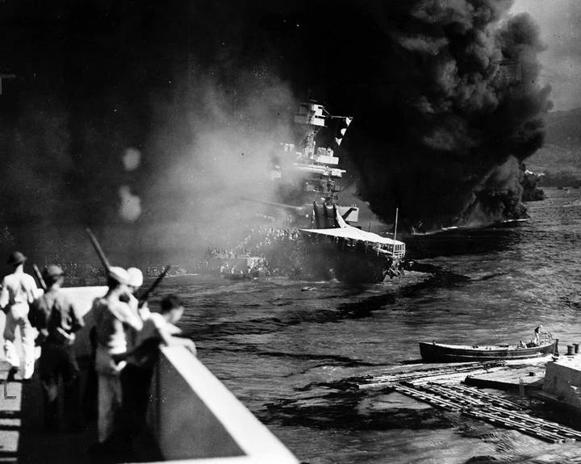
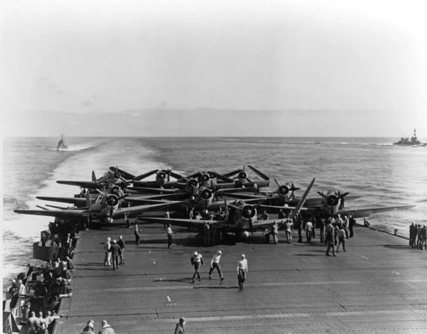
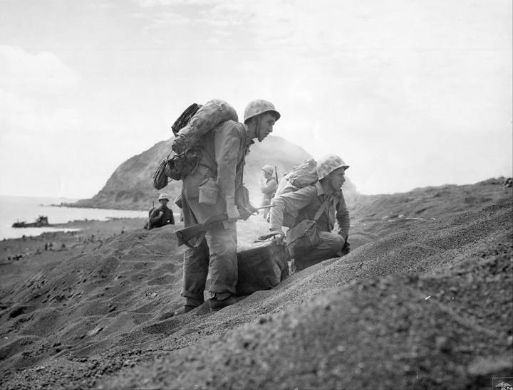
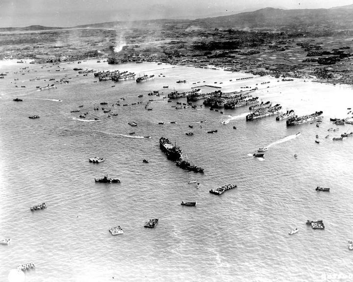
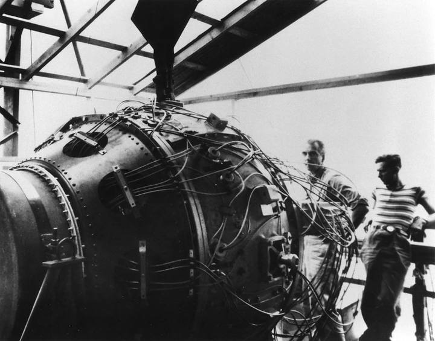

Un empire déjà en place
Avant la guerre, le Japon tient déjà Taïwan (1895), le sud de Sakhaline (1905), la Corée (1910) et, sous mandat, les archipels du Pacifique pris à l'Allemagne (1919).
La Chine envahie
L'armée japonaise s'empare de la Mandchourie en 1931, puis lance en 1937 une guerre ouverte contre la Chine. Fin 1938, Pékin, Shanghai et Nankin sont tombées.

Pearl Harbor
Sans déclaration de guerre, l'aviation japonaise frappe la base navale américaine d'Hawaï. Les huit cuirassés du port sont touchés. Les États-Unis entrent dans la guerre.
L'apogée
En six mois, le Japon s'empare des Philippines, de la Malaisie, de Singapour, des Indes néerlandaises et de la Birmanie. Le trait rouge marque son extension maximale.

Midway
Un mois après la bataille de la mer de Corail, quatre porte-avions japonais sont coulés près de l'atoll de Midway. L'expansion japonaise s'arrête là.
Guadalcanal
Première grande offensive américaine : six mois de combats dans la jungle des Salomon pour un aérodrome. Pour la première fois, le Japon recule.
Par le centre du Pacifique
Tarawa, Kwajalein, puis Saipan : les Marines avancent d'atoll en atoll. Depuis les Mariannes, les B-29 peuvent atteindre Tokyo.
Retour aux Philippines
Au sud, la seconde offensive remonte la Nouvelle-Guinée jusqu'à Peleliu, puis débarque à Leyte, au cœur des Philippines.

Iwo Jima
Cinq semaines de combats pour une île de 21 km², à mi-chemin entre les Mariannes et Tokyo : une piste de secours pour les B-29.

Okinawa
Plus de 200 000 morts, civils compris. Pour Washington, c'est l'aperçu de ce que coûterait un débarquement sur l'archipel.

Trinity, puis Tinian
Au Nouveau-Mexique, la première bombe atomique explose : l'arme fonctionne. Dix jours plus tard, le croiseur USS Indianapolis livre les pièces de Little Boy à Tinian, où attend le 509e groupe de bombardement.
Tinian, piste nord
Le B-29 Enola Gay décolle avec « Little Boy » à son bord. Six heures de vol jusqu'à Hiroshima.
08:15
Un lundi matin. La ville s'étale sur le delta de l'Ōta, coupée en îles par ses bras de rivière. Sur la carte, la ville d'aujourd'hui : chaque bâtiment en noir.
Le centre du delta est rasé
La bombe explose à 600 m au-dessus de l'hôpital Shima. En rouge plein, les quartiers rasés ; hachurés, ceux qui ont été endommagés.
≈ 140 000
C'est l'estimation retenue par la ville de Hiroshima pour les morts d'ici la fin de 1945. Le Dôme de Genbaku, à 160 m de l'hypocentre, est resté debout ; il est inscrit au patrimoine mondial depuis 1996.
11:02
Trois jours plus tard. Le B-29 Bockscar vise d'abord Kokura, cachée par les nuages, puis se rabat sur Nagasaki, un port coincé entre des collines.
Une vallée, pas une ville entière
Plus puissante qu'à Hiroshima, la bombe explose à environ 500 m au-dessus de la vallée d'Urakami. Les collines contiennent le souffle : la surface rasée est sept fois plus petite.
≈ 74 000
Morts d'ici la fin de 1945, selon la ville de Nagasaki. Le 15 août, l'empereur Hirohito annonce à la radio que le Japon accepte la reddition.
Deux bombes, deux bilans
Rapportées à la surface urbaine étudiée, 28,4 km² à Hiroshima et 7,6 km² à Nagasaki : la bombe la plus faible a détruit la plus grande part de sa ville. Le relief de Nagasaki a protégé les deux tiers de la ville.
Ici ?
Rennes aujourd'hui, à la même échelle que Hiroshima. Le centre historique, la Vilaine, la gare. Maintiens le bouton pour superposer la zone détruite de Hiroshima.
La même empreinte, sur nous
La zone rasée de Hiroshima, posée sur le centre de Rennes sans déformation. Ici, aucune rivière ne l'interrompt : elle couvre 13 km². Le cercle de 3 km couvre plus de la moitié de la commune.